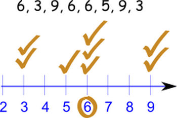

When I first started learning R early in 2020, it cames as a bit of a suprise that there were functions in base R for calculating the mean and median, but not the mode. Well, there is a function mode(), but it returns the storage mode of an R object!
Of course, the mean only operates on numeric data, as does the R median() function. But we could take the mode of a collection of pretty much any objects, numeric, factor, or otherwise.
A few times, I found myself needing a simple function to return the mode. Here are a couple options, first tested on numeric input:
my_mode_1 <- function(x) {
unique(x)[which.max(tabulate(match(x,unique(x))))]
}
my_mode_2 <- function(x) {
which.max(sapply(1:max(x), function(n) {length(which(x==n))}))
}x <- c(6,3,9,6,6,5,9,3)
my_mode_1(x)
## [1] 6
my_mode_2(x)
## [1] 6note that if there was a tie, the first function returns the first tied value, whereas the second function returns the numerically lower value.
The second function doesn’t operate on factors as it uses the max() function, which only works on numeric values:
x <- factor(c("a","a","b","c"))
my_mode_1(x)
## [1] a
## Levels: a b cSo, next time you need to find the mode in R, grab one of these simple functions :-)